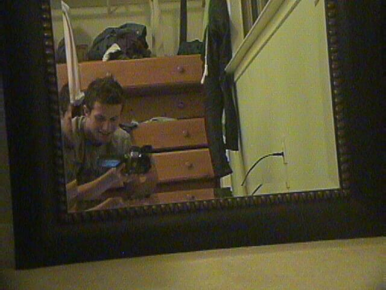
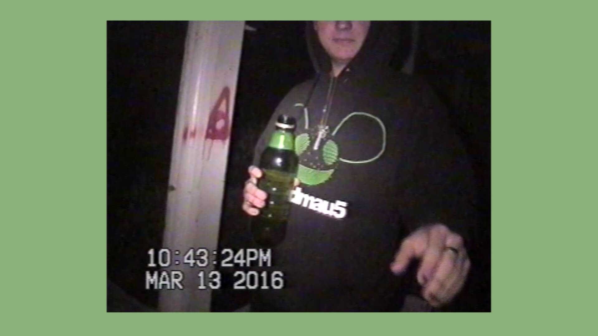
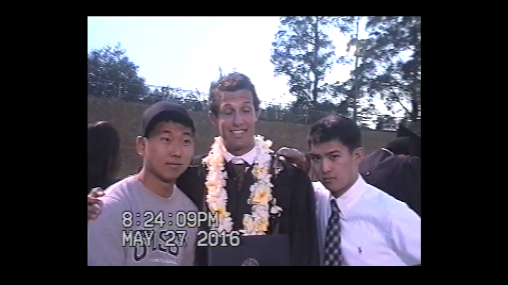
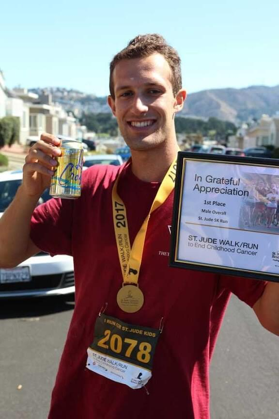
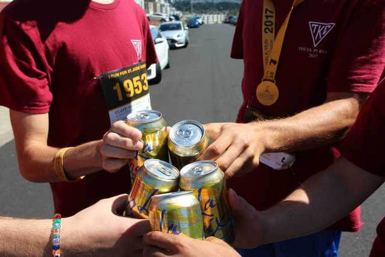

PAT'S BLOG

About this Website
This blog was coded by myself during Quarantine 2020. In this blog I detail some of my ideas, projects, and other things that are going on in my life. Entries are 300 words or less.
Contact me at patmoran77@gmail.com. Heads up, I don't respond fast.
Special thanks to Kristian Windsor for teaching me how to code.
Sleeping in a Treehouse
It was so high up that you’d have to snap your head as far back as it could go just to gaze up at the treehouse.
I don’t remember we heard about it, it was probably from a post on social media. With rough directions, we went to find it. We marched through the afternoon with more gear than we could possibly need.
The base of the tree was hidden past twenty minutes of steep trails.
It looked impossible. There was no way we could climb something this tall – definitely not with our bags on. You had to squint to even seen the treehouse itself.
I tried first. It was a strenuous climb on branches that were beginning to wear down. It felt like an eternity getting up there. Branch by branch, I hoisted myself up. At the top, a trapdoor was the final step before the safety and reassurance of the plywood platform.
On it, there was a bench, coffee table, and other janky pieces. A swing swung right over the entire 80 foot drop. Every inch of the place was marked with doodles and quotes.

I made use of a pulley and yanked our bags up.
F took ages to climb and asked me to chat with him the whole time to distract himself from the unnerving height.
We made a massive spread of food for dinner. The moon slipped through the few branches above us as we slept. In the morning, we had oatmeal.
Only a few months later, police tore down the treehouse after some drunk kids fell from the thing.
There’s lots of places like this in Santa Cruz. Abandoned or secret places where we can escape to. When we find them, we always make sure not to geotag them.
A few remain hidden...
Why I Don't Drink
I’ll have a drink once in a while. I’m not opposed to casual drinking for any reason. I have other motives.
Way back before I was even in high school, my mom told me this story of some guy whose parents offered to buy him a Rolex if he went through high school without drinking or doing any drugs.
So I tried to do the same. I never drank until weeks after I graduated high school and still have never done drugs. I’m graduating college soon and still don’t have my gold watch.
So, it isn’t some religious or moral reason I don’t drink, it just comes down to the fact that alcohol is disgusting.
The worst by far is tequila – it smells toxic. Beer is up next. I could probably rant all day about how gross beer is – especially IPAs. Yeah, lemme pay $12 for this drink that tastes like pee and makes me as full as an In-N-Out 4x4. Even mixed drinks are too sugary to be something worth paying the exorbitant amount for – cocktails in the Bay Area are $16+ for a few ounces. Waste of money.
I don’t really like hanging at bars either. You go into, and sometimes pay a cover charge for, this dark, loud room with tons of people you can’t trust so that you can catch up with friends? There’s gotta be a better place to do that.
With all that, you should acknowledge that alcohol is essentially poison to the body. The worst nights/mornings in my life are directly related to the toll alcohol had on my body.
I’m not interested in getting drinks. I think there’s other places we could go to sip on things that don’t taste and make me feel bad. Cheers.
Filming Life on VHS
These videos were unlike anything I’d seen. They were capturing these epic nights in LA all on this retro VHS cam. They went by the name LifeWithUzi and were posting on Tumblr and YouTube with these ancient camcorders.
If these guys could get these old cameras to work, I wanted to give it a try.
After scouring eBay, I found one that looked like it could work for about $30. I also ordered some VHS tapes that were brand new. As soon as it arrived, I started filming.

I filmed parties, concerts, late-night adventures – anywhere that I could lug the camera around with my buddies, I took it.
I was in an incentive to go out and do something. There is only so much you can film at your house.
There is something about the look of VHS and other film media has this entrancing quality to it. The moments captured on it look authentic. Something that you just can’t easily replicate.

After compiling enough footage I went through and turned some of the better scenes into GIFs and made a blog with them.
In the last few weeks of high school, I edited the footage into a series for YouTube called, Ratsy Boys – the nickname for our friend group.

Since then, I’ve filmed tons more footage than I’ve put online. I’ve ran into countless problems turning those old, clunky tapes to digital. Broken cords, broken camcorders, faulty tapes.
Maybe filming memories on 20+ year old tech isn’t the best idea.
Winning a 5K Race
As part of my fraternity’s philanthropy, we raised money for St. Jude Children's Hospital.
Because of this, we decided to make an appearance at their annual 5K fundraiser.
So we jammed down to the Bay and crashed at Jett and Brandon’s house in Daly City – close to the racecourse.
The next morning, we’re at the SF Zoo. This year’s venue.

I was positioned in the middle, in a flash, the race started and I took off. I side-stepped hordes of joggers before I found myself near the front pack. My start was speedy but I was surprised at my standing. The room between the frontrunners and myself thinned and I realized I actually had a good shot to place.
We snaked through the zoo as incompetent volunteers worked to guide us the correct way. Next thing I know, the only person ahead of me is a guy with running shorts hiked up to an unflattering height – a college track or cross country athlete. He is so far ahead so I mentally settle for 2nd place.
We are about a third of the way in and I see Short-Shorts take the wrong turn. Noting his mistake, I went into overdrive and bolted.
I ran as hard as I could for the remainder of it. At the finish line, I collided with a wave of parents and strollers walking the course and slipped through them, securing the gold medal in front of the officials who weren’t anticipating runners being done yet.
It was a race won through strategy with a slight amount of athleticism.
I collected my plaque and went to check out the giraffes.

For years following this race, I still have received letters in the mail from St. Jude’s, almost weekly, begging for donations.
Proper Sunscreen Use
Use sunblock, not sunscreen.
Most sunscreen you see at the store are shams.
Anything that comes from a spray bottle is a waste of money.
When buying sunscreen, if you see avobenzone, oxybenzone, octocrylene, homosalate, octisalate, or octinoxate on the label, don’t buy it.
Those collections of chemicals are harmful to your body and don’t protect you properly.
Use sunscreen where Zinc oxide is the main ingredient on the bottle.
Zinc functions as actual sunblock and repels the sun’s rays from your skin. The unpronounceable chemicals above are sunscreen and actually absorb some of the light rays.
The best form of sun protection is not covering up and mitigating your exposure.